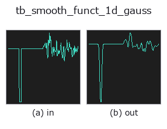

typed op• Datenarten: signal → signal
• Aufruf: fullseye.apply(img, "tb_smooth_funct_1d_gauss", a=0.5, b=0.5) (das 2-D-Modell ist ein Bild plus zwei skalare Regler a,b∈[0,1])

*Die Abbildung ist die tatsächliche Ausgabe auf einer synthetischen 128×128-Eingabe. Links Eingabe, rechts Ausgabe. Punktwolken als Draufsicht-Streudiagramm (Helligkeit = z), 1-D-Reihen als Linie, Volumen als Maximum-Projektion entlang z, Videos als mittleres Bild, komplexe Bilder als Betrag; Rückgabewerte, die kein Bild ergeben, werden als Werte gezeigt.*
Regler a durchfahren (0,1 / 0,5 / 0,9, der andere Regler auf Standard):
▸ tb_smooth_funct_1d_gauss: knob a sweep (docs site)
*Regler b ändert die Ausgabe nicht (gemessen: identisch bei 0,1 / 0,5 / 0,9).*
Stufen (die vorangehenden Ops → dieser Op, von links nach rechts):
▸ tb_smooth_funct_1d_gauss: stages (docs site)
Auf anderen Bildern (synthetische Szene / Foto / Münzen. Obere Reihe: Eingaben, untere Reihe: deren Ausgaben. Regler auf Standard):
▸ tb_smooth_funct_1d_gauss: other inputs (docs site)
Gaußsche Glättung einer 1-D-Funktion (HALCON `smooth_funct_1d_gauss`).
> Die ausführliche Beschreibung unten ist der Originaltext — Zusammenfassung und Überschriften sind übersetzt.
Convolves *y* with a Gaussian of standard deviation *sigma* (in samples),
`reflect` boundary handling (scipy default). The DC level is preserved;
zero-mean noise variance shrinks by roughly `1 / (2 * sigma * sqrt(pi))`.
:param y: 1-D function, at least 1 sample.
:param sigma: Gaussian standard deviation in samples; must be finite and > 0.
:returns: smoothed float64 array, same length as *y*.
:raises ValueError: non-1-D / NaN / Inf input, empty input, or `sigma <= 0`.
Typed bridge of the 1d op `smooth_funct_1d_gauss into the 2-D evolution registry: the same implementation, called under the op(v, a, b) convention. a drives sigma (default 1); b` is unused.
• Katalog der Beispieldaten (Download-URLs / Lizenzen) — 2-D nutzt skimage.data (BSD/Public Domain) plus synthetische Bilder, 3-D nennt Download-URLs echter Datenquellen (Stanford, PDS, …).
• Herkunft und Literatur der Operatoren — die Quellen der Forschung/Verfahren, auf denen diese Operatorfamilie beruht.
Das Programm unten ist nachweislich lauffähig (gleiche Eingabe wie die Abbildung). In der Studio-Hilfe wird dieser Block zu Schaltflächen, die es sofort laden und ausführen.
img_to_signal 0.50 0.50 tb_smooth_funct_1d_gauss 0.50 0.50
▸ Load this pipeline · Load & run
• (noch keine)
signal als Eingabe)identity · tb_create_funct_1d_array · tb_smooth_funct_1d_mean · tb_derivate_funct_1d · tb_integrate_funct_1d · tb_zero_crossings_funct_1d · tb_abs_funct_1d · tb_negate_funct_1d
typed)tb_points_to_voxel · tb_estimate_point_normals · tb_iss_keypoints · tb_angle_3points · tb_project_points · tb_render_point_depth · tb_statistical_outlier_removal · tb_radius_outlier_removal
*Provenance: ops.py — 2D Operator-Registry. Diese Notiz wird von tools/opdocs.py md erzeugt (nicht von Hand bearbeiten).*
© 2026 Kazufumi Furuse — Fullseye operator documentation. Licensed under Apache-2.0.
{kind=link}
{kind=link}
{kind=link}